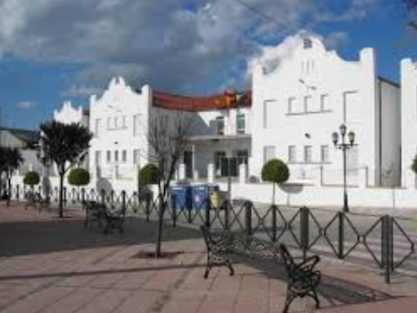

¿A quién va dirigido?
Contexto
Este centro de Educación Infantil y Primaria se encuentra en el municipio de Arriate de la provincia de Málaga. El pueblo está situado en la Serranía de Ronda y cuenta en la actualidad con 4500 habitantes aproximadamente. Está enclavado dentro del término de Ronda, cerca del Parque Natural de Sierra de las Nieves.
La economía tradicionalmente ha estado basada en la explotación de pequeñas propiedades agrícolas y ganaderas, aunque hay un alto porcentaje de trabajadores que se desplaza a la costa malagueña para trabajar en el sector de la construcción.
Las familias tienen un nivel socio-económico y cultural, en general, bajo-medio. Los habitantes de la localidad son de nacionalidad primordialmente española, aunque cada vez más se van incorporando algunas familias inmigrantes. La mayoría de las familias pertenecen a la Asociación de Madres y Padres de Alumnos/as (AMPA) y colaboran de forma activa en las actividades complementarias, tareas y proyectos.
Es un centro público de doble línea, es decir, dos aulas por curso, con unos trescientos alumnos/as y una ratio 20 alumnos/as por aula aproximadamente. En relación al profesorado, cuenta con los maestros/as suficiente (30 docentes), así como con personal de administración y servicios (PAS).
El centro educativo se divide en dos edificios, uno de Educación Infantil y otro de Educación Primaria, que se encuentra cerca del polideportivo municipal, del instituto de la localidad, el teatro y senderos.
El edificio de Educación Infantil se compone de dos plantas, un patio de recreo y en su parte trasera cuenta con una zona ajardinada.
Temporalización y contexto del aula
Esta SDA va dirigida a 20 niños y niñas del 3º nivel del 2º ciclo de Educación Infantil. Hablamos de niños y niñas de 5 años que se encuentran en una fase evolutiva de constante descubrimiento y que comienzan a hacerse preguntas más reflexivas sobre la naturaleza que les rodea, siendo capaces ya de interesarse por utilizar con cierta autonomía la tecnología.
La duración de la SDA está planteada a lo largo de unas 10 sesiones repartidas a lo largo de 3 semanas.
